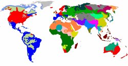

Concord
Concord can be defined as:
agreement between words in gender, number, case, person etc. which changes the forms of words.
The thing to be clear about is the direction of causality.
Concord determines which inflexion is appropriate, not the other way
around.
In the definition, concord is seen as synonymous with
agreement and that's a reasonable position to take.
We will stick with concord here because we are mostly
dealing with verbs and pronouns but agreement also exists, for example
between determiners such as this and that which agree
only with singular nouns whereas these and those
define plural entities.
English concord would, on the face of it, seem easy because English
lacks (mostly) gender and case considerations so we are left with
number.
In most tenses for most verbs, too, the verb in English is not inflected to show number
at all. This means that:
The data appeared to confirm this
will not alter whether you are using the noun data as a singular
mass concept or the plural of datum (which is what it is).
However, used with a verb like be or the present simple tense
that does alter to show number, then the speaker / writer must make a
choice.
Either:
The data appear to confirm this
or
The data appears to confirm this
and either:
The data were hard to get
or
The data was hard to get
Many other languages inflect the verb in all persons to show whether
the subject is singular or plural and speakers of these languages will
generally be quite clear and consistent in matching verb form to number.
In this respect, English may appear sloppy and inconsistent.
Furthermore, as far as the morphology of words is concerned, English
does not show gender on the noun or any modifiers. You are
probably aware that many other languages do so, for example, in
French:
an interesting man
translates as
un homme intéressant
but
an interesting woman
as
une femme intéressante
and you can see that both the indefinite article and the
adjective have an added 'e' so that they agree in gender
with the noun. The pronunciation of both items is different,
too.
Most verbs in English:
- take only one change in the present simple to signal number
and person, the -s or -es inflexion on the
verb to show third-person singular:
She goes
He smokes - when regular, only make one change to the form, adding -ed
or -d to the base to signal the past tense, past
participle or adjectival forms:
They closed
She has disappeared
a finished job
when irregular cannot make more than two changes to signal past form and past participle / adjective form with many making only one change and some making no changes at all:
They dug over the garden
She has brought the money
It cost a lot
the broken part - can take the -ing inflexion to form
present participles, gerunds and adjectives and there are no
irregularities in the system at all:
She is going
some breaking news
They like fishing
So, verbs in English have only four possible forms: the base, e.g.,
arrive, the third-person singular form, arrives, the -ing
form, arriving, and the -ed /-en form, arrived.
No other changes to most verbs are possible.
The verb be in English is very irregular. It has eight
variations determined by concord: be, am, is, are, being, was, were,
been.
In other languages verbs may have more than eight forms (sometimes many
more). In many other languages, German and French, for example,
all verbs typically have around 20 different forms signalling person,
tense, gender, mood and number.
The only other inflexions in English, apart from in the pronoun
and determiner system, is the plural marking and the genitive 's
marking on nouns:
two computers
the computer's
hard drive
There are a few exceptions with some irregular or unmarked
plurals (mice, sheep etc.) but there are no irregular
genitive endings at all.
In other languages, nouns may be altered to show gender, case and
number and may have multiple possible inflexions.
Pronouns and determiners also exhibit concord, of course, and in this case English has reasonably well developed sets. Full lists are available in the guides to pronouns so some examples will do here:
Pronouns and determiners are marked for person, number and gender
and must comply with the concord rules so we accept:
The people brought their friends
She said her goodbyes
The table fell on its side
There's a pencil on the table. It is yours?
Pass me those plates
but we will not allow:
*Mary brought their friends (unless the
friends were associated with someone else)
*She said our goodbyes
*The table fell on these side
*There are a pencil on the table. Is they you?
*Pass me that plates
etc.
A simple rule of thumb in English is
A subject which is not definitely marked for
plural requires a singular verb
(Quirk and
Greenbaum, 1973: 176)
and that should be a simple rule teachable in 5 minutes.
But, as we shall see, the situation is not quite as clear as it might
seem.
 |
What do you accept? |
First,
take this little pedantry test. Mark the following as
grammatically acceptable or not before you click on the table
for some comments.
If you want the items as a PDF file,
click here to download and print it if you like.

Before we discuss the individual issues, there are two terms to get clear:
- Notional concord
- This is defined as
The agreement of a sentence's number, person,
gender etc. with its meaning instead of what is grammatically (i.e.
prescriptively) correct (ODLT (n.d.)).
In other words, it is the idea in the mind of the speaker / writer which overcomes the grammatical imperative to insert a singular or plural verb.
Many of the sentences above which you may have marked correct but which are technically 'wrong' fall into this category. For example, the difference between
The jury are divided
and
The jury is unanimous
is that in the first the speaker is considering the jury as a number of individuals and in the second as a single entity. In other words, it is the notion in the speaker / writer's head which determines the grammar.
Compare, too, such things as
Manchester United is playing tonight
Manchester United are playing tonight - Proximity concord
- ODLT defines this as
When a verb agrees with the nearest
noun, rather than with the sentence's more distant subject.
So we get, e.g.
None of my friends are here
when the strictly grammatical correct form would be (should be?)
None of my friends is here
(none is singular normally).
In other words, the tendency in English is often to use a verb form which agrees with the nearest noun to the verb rather than agreeing with the verb's grammatical subject.
Look again at your list and you will probably see that around half of the examples represent either notional concord (the idea in the speaker's mind) or proximity concord (agreement with the nearest noun).
Now we can look at all 20 examples to see what's going on.
Try to explain what's happening in each example and then click on
the
 to reveal some comments.
to reveal some comments.
| The door are
closed |
This is plain wrong, of course. The subject of
the verb is not marked as plural so we need a singular
verb form. The odd noun in English which takes no
plural inflexion such as sheep (and many terms
for animals) may prove
troublesome.
We can have: The sheep are over there |
| The public are
unconvinced by the promise |
This is an example of notional concord. The
speaker is conceptualising the
public as a plural entity although it is
grammatically singular (as a mass noun must be).
Grammatically, of course, this should be: The public is unconvinced |
| The
congregation are listening |
Notional concord. Here the speaker may well be
familiar with individuals in
the
congregation
so thinks of it as a plural entity
rather than a singular mass.
If we know nobody in the congregation, we might well say: The congregation is listening |
| The jury is
unanimous The jury are divided |
This is another example of notional concord
with the
addition of adjectives which lead to the use of singular
or plural verb forms respectively.
unanimous implies a single opinion divided implies that individuals differ. |
| The government
are proposing a new law |
Notional concord. Political journalists and politicians often use this form when
speaking of the government
because they are familiar with the individuals who make
it up. Politicians frequently refer to
the government as we or they rather
than it. Foreign, less familiar,
governments may well be referred to as it and
show singular verb concord.
|
| Thunder and
lightning is on its way |
This is an example of a binomial in English and such
things are usually treated as singular. Other
examples include: supply and demand, salt and
pepper, hell and high water etc. (Most
spell-checking programs are unable to recognise
binomials like this.)
If the binomial contains a noun marked for plurality, however, the plural verb is preferred: The nuts and bolts are, not is, simple. |
| I told Peter
and Mary but neither have replied I told Peter and Mary but neither of them have replied |
The first case is notional concord. The word
neither is
grammatically singular but
the speaker's notion is that
Peter and Mary is (are?) the subject of the verb.
The real, grammatical, subject of the verb is the pronoun
neither which is
grammatically singular so it should be:
neither has replied. In the second case, the explanation is proximity concord because the plural pronoun them is followed immediately by the verb. Here, the grammatical subject of the verb is the pronoun phrase neither of them and that, too, is, strictly speaking, singular. |
| One in ten
schoolchildren take drugs A large number of people have arrived already |
In both cases we have an example of proximity
concord because the speaker is influenced by the plural
nouns, schoolchildren and
people.
The grammatical subjects in this case are one in ten and a large number respectively and both are singular noun phrases. In the second case, the situation may be regarded as similar to the next example. |
| There were a
range of possibilities |
Words such as range, group,
variety etc. are problematic. Strictly
speaking, they should be singular and should be treated
so in formal or academic writing and speaking. Informally,
using the plural is not considered 'wrong'.
However, because they are often followed by plural nouns as in, e.g.: A variety of methods have been tried proximity concord is often decisive. Nevertheless, in formal writing the singular verb is usually avoided. See below for the times when the plural is unavoidable. |
| Those sort of
books are not recommended for children |
This is a double anomaly.
Not only is
sort
not pluralised after
those (as it usually
would be) but it is also followed by a plural verb form,
breaking the cardinal rule. It's clumsy, however, and
most speakers would get around it with something like
Books of that sort are not recommended for children which maintains the plural verb (are) for a plural subject (books). The proximity of the plural noun usually determines the concord. |
| Good manners
is a rarity |
This is arguably not strange at all if the speaker
considers
manners
to be a
singular mass noun (clearly, it is not the plural of manner here). At worst it's an example of
notional concord but the alternative:
Good manners are a rarity sounds odd to some people (although most spell-checking programs will recommend it). |
| Everyone
thinks they know the right answer |
English does not have a pronoun
for singular people unmarked for gender so this is a way of
getting around the awkward he or she
construction. It's acceptable in informal speech
but rephrasing will get around it in formal speech and
writing.
It is not a question of noun-verb concord so much as noun-pronoun concord. The indefinite pronoun everyone is singular so there's nothing amiss with the verb form. The problem lies with using they for a singular referent. There is a guide to gender on this site, linked below, which considers this matter in a bit more depth. |
| The group who
were asked to decide couldn't do so The group which was asked to decide couldn't do so |
This is another
interesting anomaly in English to do with notional
concord. If we treat the group as
personal, using who as the relative pronoun, we
use the plural form of the verb.
If we treat the group impersonally, using which as the relative pronoun, we prefer the singular. |
| None of them
are here yet Neither she nor her children are coming Either of the boys are welcome |
All of these are examples of proximity concord
because each verb is preceded by a plural entity.
Speakers will often select the plural verb form, especially in informal language. Strictly, the verb should be singular in all cases because the verbs' subject are none (i.e., not one), neither (i.e. not one of two) and either (i.e., one of two) respectively. Both neither and either refer, of course, to two but, nevertheless, the words are treated as singular in strict English grammar. Compare, for example: One of the girls comes by bicycle in which proximity concord cannot operate because the subject is stubbornly singular, so: *One of the girls come by bicycle is always unacceptable in standard English. A subset of this form of proximity concord occurs rarely with the determiner little as in, for example: Little profits were left which should, following the grammar be was left because little, like none is a singular concept (unlike few which determines countable nouns). Compare, e.g.: Little furniture was sold in which there is no issue of concord. This only occurs with unusual pluralised mass nouns such as profits, takings and proceeds. |
 |
Proximity and notional concord rule, OK? |
Or should that be 'rules'?
If we conceive of the term proximity and notional concord
as a single concept, then it should be treated as a singular subject
noun phrase. If we think of it as two subjects, then it's
plural.
There are a few considerations of the times when strictly grammatical concord is overruled by the effect of proximity and notion. Here's the selection.
- Group nouns

- There is a technical difference between two sorts of group
nouns.
a collective noun (such as army, family, audience, congregation, jury etc.) and nouns referring to a collection of people or objects called assemblage nouns (such as flock, bunch, swarm etc.) but it need not concern us in the consideration of concord because the same considerations apply to both.
For more on the difference, see the guide to nouns and that to partitives, classifiers and group nouns, linked below.
Such nouns are frequently combined with plural forms of the verb and pronouns, especially in speech where the constraints of grammar are less strongly felt. This is a form of notional concord. For example:
The audience were delighted by the performance and their applause was prolonged
The congregation were singing lustily and their pastor was pleased
However, when we conceive of the collective as a single entity, then in both speech and writing, the choice will be singular. For example:
The audience was small but its enthusiasm was obvious
The congregation was told to get on its (their?) knees
are both possible and common, especially in writing.
Proximity concord also applies, especially to assemblage nouns in which the nearest noun is generally in the plural and abuts the verb so we can have both singular and plural verbs forms and pronouns:
The band of musicians have arrived and they want to be paid
The squad of players was delayed and they apologised for being late
The herd of elephants were threatening and they had to be treated with care
The whole herd of cows was sold at auction and it got a good price
etc.
We sometimes find a mix with a singular verb form followed by a plural pronoun as in the second example above and, for example:
The gang of criminals was arrested and they all admitted the theft
We do not, however, usually see the reverse ordering because once a plural verb form is used the pronoun which follows agrees with it so
*The class of children were told to wait but it disobeyed
is not accepted.
The more formal the writing or speaking, the more likely it is that the purely grammatical forms will be selected.
Conflict generally compels plural concord so while we have:
The team has won again
which sees the team as a single, united entity, we will also see:
The team are arguing among themselves about the right tactics to use
which sees the team as a divided group of individuals with different views. - General collective terms
- In addition to restricted collective nouns such as team,
family and jury, there is (are?) also a range of
generalised terms frequently used with the of-construction including:
array, assortment, collection, group, majority, minority, number, raft, range, series, set, string, variety
and so on which cause concord problems in English (especially British English).
Although formal writing usually compels the use of a singular verb form with such terms, there are times when the plural form seems unavoidable when exemplification is inserted or when the subject of the verb is recognisably plural, so we are happy with, e.g.:
A range of languages is identifiable which ...
but when we insert more than one example, as in:
A range of languages, including Russian, German, Dutch and Polish ...
the plural verb form (do not does) will naturally follow and even without the examples, after
A range of languages ...
most writers will happily insert a plural verb form to follow because it is languages rather than range which is (? are) the subject.
The words minority and majority are tricky with respect to concord and writers will disagree concerning the correct use even in formal texts. Both:
The majority supports the government
and
The majority support the government
are seen and heard.
Pronoun use for these two nouns is also variable between it and they.
The British National Corpus of 100 million words has frequent examples such as:
However bad the situation, the majority is unwilling to risk change.
and
The majority is engaged in the service sector.
but also has:
The majority are genuine cases of people struggling to make ends meet
and
The majority are unemployed
When the term majority is used to refer to the difference between the winning and losing result in a vote, it is a normally a pluralisable common noun and follows simple concord rules as in, e.g.:
His majority is slim
Their majorities were huge
Minority is treated both as plural and singular with a small advantage to the singular use.
In informal language proximity usually determines the concord so we often hear (and read):
The range of possibilities are enormous
An assortment of ideas have been put forward
The government is introducing a raft of new measures which are aimed at the problem
and so on.
One oddity here is that the term list which, on the face of things appears to be similar to other collective terms is invariably singular:
The list of groceries is in the kitchen
There is some evidence that determiner use has an effect with the definite article governing singular use and the indefinite article governing plural use so we get, e.g.:
A majority of the workforce support him
The majority of the workforce supports him
The number of violent incidents is lower this year
A number of violent incidents have occurred recently
but this is not close to being a reliable rule.
(In this respect, a major and widely respected British newspaper, The Times, sets it style guide to the effect that it:
... use[s] the singular verb with corporate bodies (the company, the government, the council etc.). But we prefer the plural use for couple, family, music groups, and bands, the public and sports teams. Thus, France (the country) is a top place for holidays but France (the rugby team) are the Six Nations champions.
The Times, 26th March 2022) - Pairs and pluralia tantum

- Pairs of items which take plural endings include:
Clothing items: drawers, flannels, gloves, jeans, knickers, pyjamas, pants, shorts, tights, trousers etc.
Instruments: bellows, binoculars, glasses, pincers, scissors, secateurs, shears, spectacles, tongs, tweezers etc.
and these all take a plural verb form when used alone, as in:
Your jeans are in the wash
My spectacles are broken
However, when the are used with the expression pair of, they strictly take a singular verb:
My new pair of jeans was expensive
A pairs of spectacles has been found
but proximity concord often overrides grammatical rules so we also hear and see:
My new pair of jeans were expensive
A pairs of spectacles have been found
They also usually revert to the singular form when used in compounds so we have, e.g.: spectacle case, trouser pocket etc.
Pluralia tantum (the singular of which is plurale tantum) are nouns which only appear in the plural or are used in the plural with a particular sense and include, for example: alms, amends, auspices, brains, contents, funds, leftovers, means, remains, riches, surroundings, thanks and wits.
They are all used with plural verbs although the sense is often of a mass noun which should, following the conventions in English, be singular. Compare, for example:
The money wasn't available
The funds weren't available
The financial means weren't available
which are more or less synonymous but grammatically different.
A longer list of such nouns is available in the guide to nouns, linked below. - Parenthetical subjects
- When a subject is extended in some way parenthetically
either by using commas or brackets, it is ignored for
considerations of concord so, for example, we can allow:
The man and the students are in the class
The man, but not his students, is in the class.
when the parenthetical item is clearly meant to include the subject, however, either form is heard so we encounter:
The teacher (and her students) is in the class
The teacher (and her students) are in the class
Formally, the singular is preferred if the addition is parenthetical rather than extending the subject. - Coordinated subjects

- Subjects consisting of two elements or more cause problems,
too. For example:
Your help and advice was invaluable. Without it, the job would have been impossible.
is common when the speaker's perception is that help and advice form a single abstract entity.
The situation is less clear when the subjects are less closely related. For example:
Your advice and the money you lent us were both important to us. Without them, we'd have been stuck.
and here the plural forms are preferred because the acts of lending money and giving advice are less closely related in the speaker's mind.
When the coordinated subjects are clearly independent entities, the plural forms are preferred so we have, for example:
Your car and mine are similar. They both use too much fuel.
When two or more subjects are in apposition, i.e., referring to the same entity, only the singular form is possible so we have, for example:
Sense and Sensibility, that fine book and great example of clarity in writing, is one of the triumphs of British writing. It should be on everyone's bookshelf.
where the singular is preferred because the title and the two descriptions are co-referential.
When the determiner both is used, the plural form is always preferred as in, e.g.:
Both your advice and your help were invaluable.
because both always refer to a dual entity in English. - Syllepsis

- This is related to the last point and refers to a situation
where there is a relationship between one word and a number of
others but agreement cannot be complete. In that way, it
is akin to zeugma (considered
in the guide to polysemy, linked below).
For example, concord is simple with:
John knows and the children know
where we have two verbs agreeing with their respective subjects, but in:
I am not sure if Mary or the children know / knows
it is unclear what the verb form should be. Usually, speakers will opt for the nearest noun subject on the basis of proximity but that is not a rule.
Similar problems arise with determiner concord so in a sentence such as:
My father and her mother each have / has his / her / their own house
where the verb form and the pronoun are uncertain.
In formal language, such sentences are best rephrased to avoid too much clumsiness.
The verb be causes many syllepsis issues because it is so irregular. While the syllepsis does not arise in, for example:
I and the neighbours agree about the need for the work
there is no problem because English does not mark the verb agree to distinguish between first person singular and third person plural subjects. However, in:
I and the neighbours am / are paying for the work
or
The neighbours and I am / are paying for the work
there is a problem of syllepsis because the verb be is marked for number and, again, most native speakers will opt for a plural form. - Quasi-coordinator prepositions

- These include as well as, along with,
together with, more
than and as much as and the tendency is to make
the additive ones (as opposed to the exclusive ones such as
rather than, but not) singular when they coordinate two subject elements or more
so we have, e.g.:
John, as well as his whole family, is renting a cottage this summer
Mary, along with her sister, is hosting the party
John, more than Peter, is capable of fixing that PC
Harry, as much as I, enjoys classical music
However, especially in written English, a plural form is often used if the subjects both refer to the main verb so the first and third examples above might be:
John, as well as his whole family, are renting a cottage this summer
and
Mary, along with her sister, are hosting the party
When the two noun phrases do not equally apply to the verb, the verb will remain singular in , e.g.:
As much as I enjoy rap music, Joan appreciates jazz. - Relative pronouns

- Relative pronouns have antecedent nouns and it is to the
antecedent noun that concord attaches so, for example:
The children who were asked to come early are here
is acceptable because the antecedent of who is the plural noun children.
However, in:
One of the parents who were asked has not arrived yet
a plural verb would be unacceptable although the antecedent is still plural because it agrees with the subject and that is one. - Nominal adjectives
- The old and the young.
Nominal adjectives appear to be singular but are always treated as plural in English so we get:
The rich are more fortunate
The poor are always with us
The unmarried have a good deal to think about
etc. - Either ... or

- This correlative coordinator presents problems.
It's simple when the elements are both singular, so we have, for
example:
Either John or Mary is coming
and when the elements are both plural, the obvious choice is plural verb forms:
Either John and his sister or Mary and her brother are coming
but a problem arises when one element is plural and the other singular so both:
Either your reasoning or your references are faulty
Either your references or your reasoning is faulty
are possible and here, the tendency in English is for the verb to conform to the number of the closest subject. In other words, proximity rather than notion rules and whichever noun phrase is nearest to the verb will determine its form.
Even with two singular coordinated elements, native speakers will often ignore the grammatical rule and produce, e.g.:
Either she or you need to be there.
The same issue occurs with or standing alone. We get, therefore:
A tree or a shrub is needed here
Trees or shrubs were planted here - Neither ... nor

- This is another correlative coordinator but in this case, native
speakers will often opt for the plural as in:
Neither Mary nor Peter are taking a holiday
where
Neither Peter nor Mary is taking a holiday
is the form preferred by grammarians and more likely in writing but sounds rather formal.
When both choices are plural, the plural verb form is required so we get, e.g.:
Neither my glasses nor my mothers were strong enough
When either entity is plural, the plural verb form is conventional but there is some doubt. We may hear both:
Neither my cases not John's case are / is here.
See above under syllepsis.
When nor is used alone, the same issue occurs:
You nor she is to blame
We nor they are to blame
?I nor they am / are to blame - Each and every and other
indefinite pronouns and determiners
- These determiner / pronouns present a few difficulties
because there is often a tendency to treat all occurrences as
plural. The rule, such as it is, is quite simple:
With a singular subject, stated or implied, the concord is a singular verb form so, e.g.:
Each person in the office gets the same holiday entitlement
The new students will arrive one by one and each gets a welcome pack
Every child needs love
When the subject is plural, the concord works equally well:
John and Mary each have a new car
Peppers are €0.20 each
However, when each of is used, the concord is singular as in, e.g.:
Each of the peppers costs €0.20
not
*Each of the peppers cost €0.20
This rule is often flouted because of proximity so, informally one may encounter:
Each of the houses were painted a different colour
but formal language requires singular treatment.
There is no possibility of using the of-formulation with the determiner every so the issue never arises.
The pronouns all, another, anybody, anyone, anything, everybody, everyone, everything, nobody, nothing and one are strictly speaking singular and take a singular verb form although notion and proximity may affect things sometimes with all:
All of the cake was eaten
All of the apples were eaten
The pronouns everyone, everybody and everything are stubbornly singular in English. - More than

- This compound determiner follows the proximity rule,
regardless of the logic, so we have, e.g.:
More than five people have arrived
More than one child is playing truant
While the first example is perfectly logical and grammatical because the subject of the verb is at least six people, the second example is quite illogical – more than one must be plural and would be treated that way in most languages which inflect the verb for number. English will not even allow:
*More than one child are meditating
however logical that is. - None
- The determiner and pronoun refers to both mass and count noun phrases and behaves
slightly quirkily in terms of concord. So we get, for
example:
The money was promised but none has materialised
where none stands for a mass noun so will always be singular grammatically and
I ordered the part but none has arrived
where none refers to a singular count noun so the singular form is preferred but we will not usually wince at
I ordered the parts but none have arrived
where none refers to a plural count noun so invites the plural form although grammarians will insist that it is singular. It should, therefore, strictly, be:
I ordered the parts but none has arrived
Proximity, however, often allows the plural verb form here. - Quantifiers and measures (a
messy area)

- Quantifying determiners such as most of, the majority
of, half of, 80% of etc. follow a simple set of concord rules.
- When the noun which is being quantified or limited is plural,
the verb takes a plural form, so we see, e.g.:
80% of people are not aware of the problem
Half of the children were off sick
The majority of the workers were dissatisfied
etc. - When the noun being quantified is singular, even if it clearly
applies to a plural group, the verb form is grammatically
singular so we get, e.g.:
80% of the population is not aware of the problem
Half the class was off sick
The majority of the staff was dissatisfied
etc.
Notional proximity often overrides grammatical purity in these cases and many will opt for a plural verb in all cases where there is plural number in mind. - Words for specific numbers are always treated as plural although
they appear singular:
A score of people were there
A dozen eggs were broken
Half a dozen neighbours were invited - Quantifiers and measures for money and time are usually singular in terms of
concord, even though the subject is clearly plural. We
see, therefore:
$500 is a lot to pay for that
Three years is too long to wait
etc.
However, if we are dealing with notions of the units rather than the total amounts, plurality is common, but not obligatory in many cases. we may encounter:
There are only two dollars on the table
because the speaker is considering the units, not the amount.
The same considerations apply to time and distance so we would normally expect singular concord as in:
Twenty minutes was spent on this
Two miles is too far for her to walk
but, again, if the units are being considered, the plural is encountered as in:
Of the remaining 30 minutes , ten are dedicated to a discussion of this.
Two miles are marked by the side of the road. - Science and mathematical calculations
- The outcomes of calculations are always singular even when
obviously plural:
6 X 8 is 48 - Fractions
Quantities below 1
When a number is cited as being below one, then the assumption is that it should be plural because we are referring to the unit, not the total and the unit is pluralised but not the verb. So, we get:
0.76 inches is not enough
0.36 litres of the solution is added later - Other fractions
For these we follow the rule that if the noun itself is plural, we use plural concord and vice versa so we get:
Half the sugar is wet
Three-quarters of the people don't enjoy that - Science
The convention in scientific writing is to use singular concord for all measures, whether units are mentioned or not so we see:
Six millilitres was added to the solution
not
*Six millilitres were added to the solution
The differences above concerning percentages still applies.
- The outcomes of calculations are always singular even when
obviously plural:
- An oddity is the quantifier one which is clearly
singular but notion and proximity may override the use so we
see:
One in ten of the class is late
One in five are late
etc. - We saw above that every is generally considered
a singular concept in English but with quantities, the
situation is not always very clear so we may encounter both:
Every 5 gallons qualifies you for a free bonus reward
and
Every 5 gallons qualify you for a free bonus reward.
- When the noun which is being quantified or limited is plural,
the verb takes a plural form, so we see, e.g.:
- There is and There are
- The existential there causes some concord issues in
especially (but not solely) informal language.
The grammatical rule is clear that there is precedes a singular or mass noun phrase and there are precedes a plural one. We should have, therefore, e.g.:
There is a unicorn in the garden
and
There are unicorns in the garden
However, in informal, especially spoken, language, the concord rule is often ignored so we may encounter:
There's lots of people here
There's the children to consider
There's good reasons for his behaviour
Generally, in written English, concord rules will win over casual use but there is is certainly commonly used for plural entities. - Pronoun concord and sexist language

- An anguished area of English usage is the avoidance of he
as an unmarked pronoun in a sentence such as:
Everyone thinks he knows better
where he acts as an unmarked form and includes both sexes.
The presumption is that we should prefer a form such as
Everyone thinks he or she knows better
which is clumsy, or
Everyone thinks they know better
which breaks the concord rule by having a plural pronoun to stand for the singular everyone.
The same issue arises with the indefinite pronouns combining some, any, no with -body or -one. We get, then, sentences such as:
Does anyone not know their student number?
Nobody brought their laptops
Somebody has lost their wallet
The pronoun whoever joins in the fun here so we find sentences such as:
Whoever refuses to pay will have the money taken from their account
All these examples fly in the face of logical concord but are frequent in spoken, informal English.
There are times when the use of they, their, them etc. to refer to a singular entity is almost unavoidable. For example, it is difficult to see how:
The person who told you that has got their facts wrong
can be successfully rephrased to conform to the rules of concord.
In formal and/or written English, there is no obvious way out of the difficulty so most writers prefer to rephrase entirely to avoid either causing offence to female readers or causing offence to grammatically sensitive readers (or both).
For a little more, including non-binary uses of they, them, their etc. to refer to single individuals, see the guide to personal pronouns, and the guide to gender linked below.
The use of they, their and them to refer to a singular entity whose sex is not known or irrelevant is attested in English from at least the 14th century. Only when Latin-influenced grammarians rose to prominence did the insistence on the non-marked use of he arise. The use of the plural pronouns is making something of a comeback because of social pressures.
 |
Other varieties of English |
American (and to some extent Canadian and Australian
usage) is slightly different. In AmE, a singular noun
will usually take a singular verb form whatever the notional
agreement would be. So we get:
The government is (not are)
The administration is (not are)
The company is (not are)
etc. where BrE dallies between plural and singular concord.
Other varieties of English, New Zealand, Australian etc.,
also show variable concord use but there is a tendency
everywhere to formalise the issue and settle on singular
concord for singular entities.
However, notional concord can sometimes occur in
reverse in all varieties so we get, e.g.:
The United Nations is (not
usually
are)
The UAE is (not usually are)
The USA is (never are)
and so on.
|  |
Other languages |
As well as often being stricter than English and insisting on formal rather than notional or proximity concord between verb and number, many languages have a much more complex system of concord, sometimes referred to as agreement.
- gender
- Languages such as French, Spanish and Russian will
often alter the form of adjectives to agree with the
gender of the noun they modify. So, for example:
In French: la grande maison; le grand homme [the big house; the big man] - number
- The form of the article also agrees in
number with the noun it precedes in many
languages. For example, in English, only the form
of the noun (the -s inflexion) differs between:
the large car
and
the large cars
but in Spanish, the adjective and the article exhibit number concord (as they do in most Romance languages) and the phrase would be translated as:
el carro grande
and
los carros grandes
respectively. - case
- Languages such as German and Czech which have
complex case structures will also alter lexemes to agree
in these terms, too. So, for example:
In German:
mein Name ist
means
my name is
but
Sag mir deinen Namen
means
Tell me your name
The form of the possessive determiner also changes to agree in case with the noun (subject in the first example, object in the second). - other kinds of concord
- In some languages, such as Serbian, the form of the
participle may change to agree with the gender of the
speaker so, e.g., the participle in
I was drinking
will alter depending on whether a male or female is speaking.
 |
Issues for learners and teaching |
 |
When in doubt |
Learners crave rules and concord is, unfortunately, an area where speaker preference often overrules grammatical and logical considerations. When in doubt:
- The grammatically 'correct' formulation will usually be
acceptable, even if it may sound unnatural to a native speaker's
ear. So, prefer:
Neither John nor Mary is coming
over
Neither John nor Mary are coming
and prefer
Either you or I is the person to do it
over
Either you or I are the people to do it - In writing, following strict grammatical concord rules is
usually preferred. So, prefer:
Your help and advice were invaluable
over
Your help and advice was invaluable
Additionally, avoid awkward and ungrammatical uses of pronouns and verbs in an effort to use non-sexist language and rely instead on rephrasing, so prefer:
On their first day, all students will get their timetables
over
On his or her first day every student will get their timetable - Notional and proximity concord usually produce the most natural-sounding language in speech. So, treat collective nouns
or assemblage nouns as
plural, in spoken English and prefer:
The group are playing tonight
over
The group is playing tonight
and
The government have no answer
over
The government has no answer
and
The set of options are quite varied
over
The set of options is quite varied
but prefer the singular in formal, written prose (or in American usage and most languages). - Proximity rules when none of the other considerations is (are?) in play.
Be aware of simplicity in English |
Concord is messy, especially in British English where considerations other than grammatical form often override logical verb and pronoun use. It is, however, important to remember that concord in English applies almost solely to verb forms (and not in all tense forms) and to pronoun use.
The simplicity of the ways that verbs conjugate and nouns
decline in English may well confuse some learners because
they expect agreement and may, therefore, produce errors
such as:
*He cans
*He lefts
*The greens pullovers
etc.
Word order, too, may cause problems because English does not
alter its articles to show case. Word order is often
the only way to determine which is the subject and which the
object. So, for example:
The delay caused a problem
and
A problem caused the delay
are only distinguished in meaning by the ordering of subject
and object.
Other languages, which do denote case with
changes in the determiners or the nouns themselves, have,
accordingly, freer word orders because the forms signal
case. For example, in German:
The dog bit the man
is
Der Hund biss den Mann
and
The man bit the dog
is
Der Mann biss den Hund
Note the single letter change to the determiner: der
to den, subject to object.
But if the noun phrases are reversed, the meaning is still
clear:
Den man biss der Hund
still means
The dog bit
the man
and
Den Hund biss der Mann
still means
The man bit the
dog.
although the object has been fronted for effect.
In English, reversing the noun phrases reverses the meaning:
The man bit the dog
vs.
The dog bit the man.
Other languages (such as Czech) may make changes to the verb form or
endings on the nouns (as in Russian) to distinguish between subjects
and objects.
Take a test in this area.
| Related guides | |
| counting, classifiers and partitives | for a guide which considers how notional and proximity concord affect assemblage and collective nouns |
| relative pronoun clauses | for a guide containing consideration of how concord works in relative clauses |
| it and there | for a guide which considers how the introductory there is treated in terms of concord |
| nouns | for a guide to the major word class which has to consider concord |
| personal pronouns | for the simple guide to these which includes some consideration of sexist-language avoidance schemes |
| gender | for a guide which considers this form of pronoun and verb (non)use only |
| polysemy | for the guide which considers zeugma and other examples akin to syllepsis |
| indefinite pronouns | for a guide which includes considerations of concord with certain pronouns |
| case | for a guide to how case may affect concord (or agreement) with adjectives, nouns and articles |
References:
Quirk, R & Greenbaum, S, 1973, A University Grammar of English. Harlow:
Longman
On-line Dictionary of Language Terminology, available at
http://www.odlt.org/